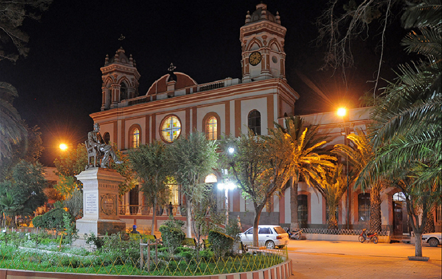
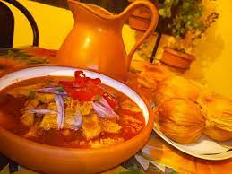
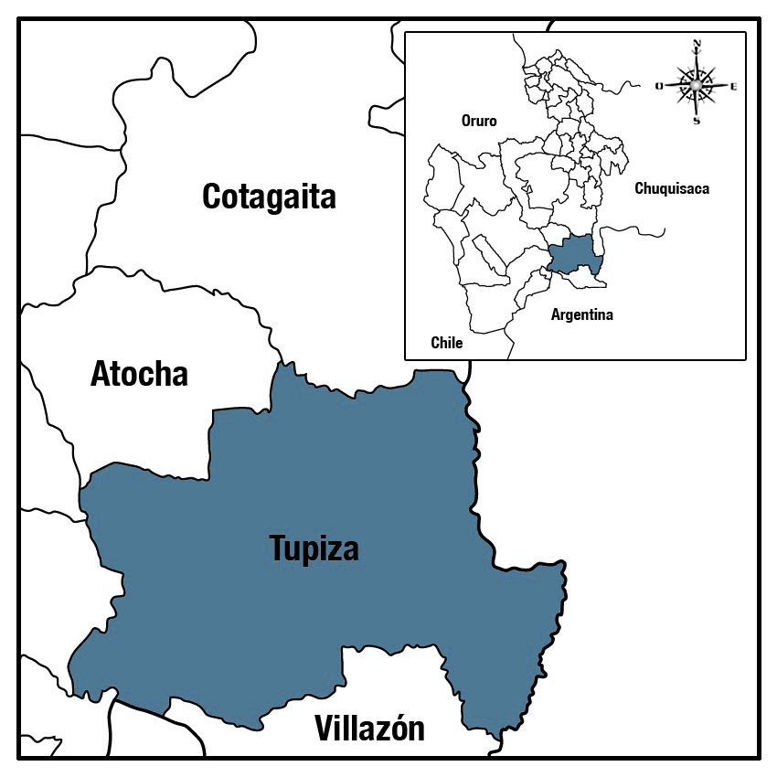

Tupiza con sus 45,531 habitantes, segun el CENSO 2024, villa simpática y con clima agradable, es rodeada por los cerros colorados de la Precordillera a 2950 metros de altura en el fértil valle del Río Tupiza. Ubicada en el territorio ancestral de los Chichas, en 1895 se convierte en capital de la Provincia de Sud Chichas y municipio del Departamento de Potosí.
Es puerta de Bolivia hacia la Argentina y su producto principal consiste en minería y agricultura (choclo). Tupiza fue fundada por los Españoles, pero la fecha exacta no está comprobada históricamente. Sin embargo debe de estar entre las primeras fundaciones coloniales efectuadas en el Alto Perú de alrededor del 1536.
Un auge especial inició con la inauguración de la vía férrea que en 1924 conectó Tupiza con La Quiaca, pueblo fronterizo en la Argentina. Hoy en día la villa se compromete a recibir con una infraestructura acomodada al turismo internacional que aumenta año tras año, atraído por la belleza de sus entornos.
En el siglo XIX, Tupiza ganó notoriedad como el lugar donde se refugiaron los famosos forajidos estadounidenses Butch Cassidy y Sundance Kid, quienes se establecieron en la región después de escapar de la ley en su país. Esta conexión ha hecho que Tupiza sea un destino turístico atractivo, con visitantes interesados en la historia del Viejo Oeste.
CARACTERISTICAS
Departamento Potosí
Altitud (M.S.N.M) 2850
Provincia Sud Chichas
Clima Seco y Frío
Sección Primera
Temper. Promedio (ºC) 14,0
Circunscripción Electoral 37
Municipio Fronterizo Si / Argentina 


.jpg)

QUESO TUPICEÑO El queso de Tupiza sobresale del resto por tener una maera particular de preparado, ya que la leche que se utiliza es de cabra.
TAMAL DE TUPIZAEste es el tamal, un platillo tradicional muy popular en la región.
KHASAUCHU El K'hasauchu es un plato típico de Tupiza con un sabor único y lleno de historia, mayormente consumido despues de una noche de fiesta.
AJI DE PELADO Preparado con maiz de la región, es servido en fiesta donde es el alimento que se sirve para agradecer su participación o invitación.
CHICHA TUPICEÑA Esta bebida siendo una ambrosia de dioses se la disfruta diariamente en el pago y se la puede encontrar en los distintos mercados de nuestra querida ciudad de Tupiza, como también en los diferentes acontecimientos y fiestas de la ciudad como seria la fiesta de reyes.

El choclo en Tupiza es dorado y muy dulce, ya que las tierra de nuestro municipio son muy buenas, para servirse un rico choclo es muy comun acompañarlo con queso de la región.

FIESTA DE REYESRecordemos que, a inicios del mes de enero, se realiza una de las actividades más grandes e importantes a nivel cultural de nuestra ciudad, la “Fiesta de Reyes” es una de las mayores expresiones de la identidad Chicheña y tradicionalista misma que comprende nuestra danza, comida y bebida regionales.

CARNAVAL DE TUPIZA Dentro de sus atracciones turísticas, se encuentra el Carnaval de Tupiza, conocido como Carnaval Chicheño, el cual trae consigo la manifestación de la cosmovisión Chicha, traducida en danzas, rituales, y música autóctona. Es un espectáculo pluriétnico, diverso y participativo que no solo favorece a la comunidad chicheña.

Es una costubre que se realiza durtante la epoca de siembra, donde se invita a la comunidad para qu epuedan ayudar a sembrar y como agradecimiento se prepapra comuda y bebida, el tradicional pelado y y la chicha de maiz.